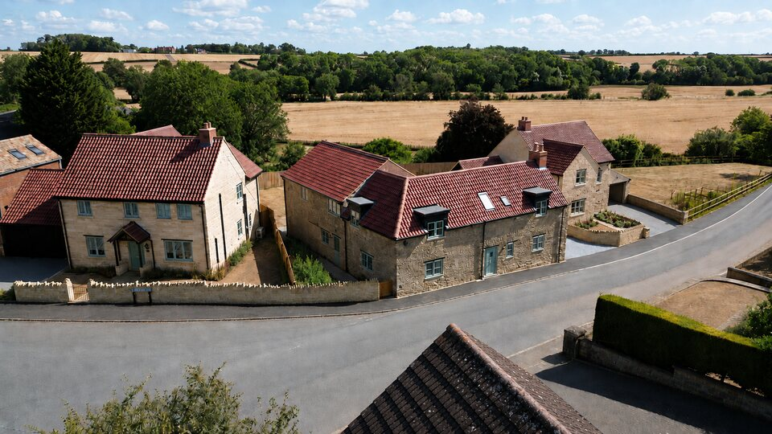
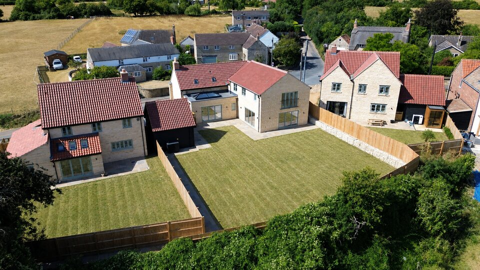
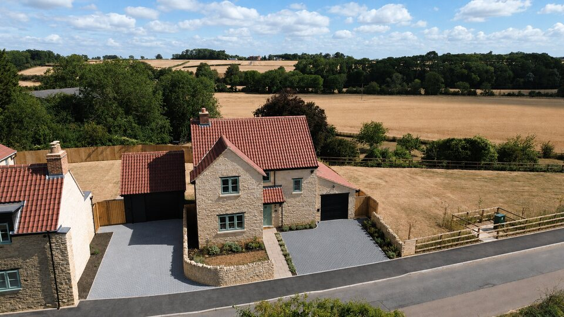

Overview
The conversion of a former public house together with two new detached family homes. The scheme is now complete, with all three properties sold.
The Site
The site centred on the former Samuel Pepys Public House, a 200-year-old building in the heart of the Northamptonshire village of Slipton. The public house had ceased trading and the site presented an opportunity to bring an important local building back into use alongside two new homes within the existing settlement boundary.
Planning & Design
The approach prioritised retaining the character of the original public house building through sensitive conversion into Lily House, while the two new build homes — Aster House and Peony House — were designed in natural stone to complement both the conversion and the wider village setting. The scheme was designed to sit comfortably within an established rural village environment.
Delivery
Abel Gray Homes managed the development directly throughout, from acquisition and planning through to construction and completion. Each home was delivered with a 10 year structural warranty. All three properties were sold prior to final completion.
Developer
Abel Gray Homes
Location
Slipton
Northamptonshire
Homes Delivered
3 homes
House Names
Aster House
Lily House
Peony House
Status
Completed
Warranty
10 year structural
warranty
Completed Homes


Aerial Site Photography



CGI Renderings
_1766488796939.jpg)
_1766488809694.jpg)
_1766488812018.jpg)
_1766488815732.jpg)
Project Progress & Completed Interiors


Interested in working with us?
Get in touch to discuss land, investment or upcoming opportunities
Get in Touch